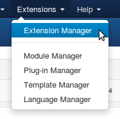
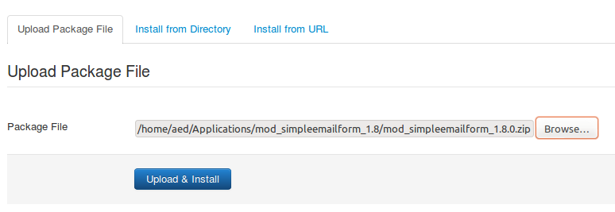
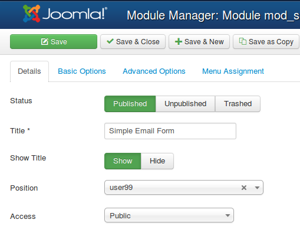
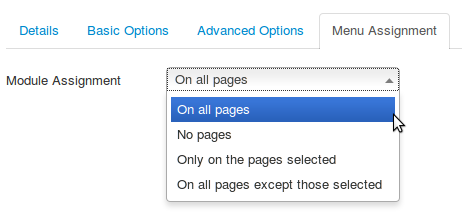

Installation¶
Here is the installation procedure for Joomla 3.x. The procedure is very similar for Joomla 2.5 except that the screens look slightly different.
Login as the Joomla Adminstrator
Select Extensions - Extension Manager
Locate the Simple Email Form module TAR.GZ file which you downloaded
Click Upload and Install
When done you should see a friendly message indicating success
Select Extensions - Module Manager
Click on the title Simple Email Form
For Status make sure you select Published
Enter a title as desired
For Position enter either a Module position as indicated by your template, or enter a custom position (i.e. user99) if you plan to load the module into an article
You can then configure the various Basic Options and Advanced Options
Make sure the module is assigned to either On all pages or on the pages you choose
SAVE your changes!

Choose Extensions and then Plug-in Manager
If you plan to load the module into an article, make sure that the Content - Load Modules plug-in is enabled.
For more information, see the next article on Installation options!